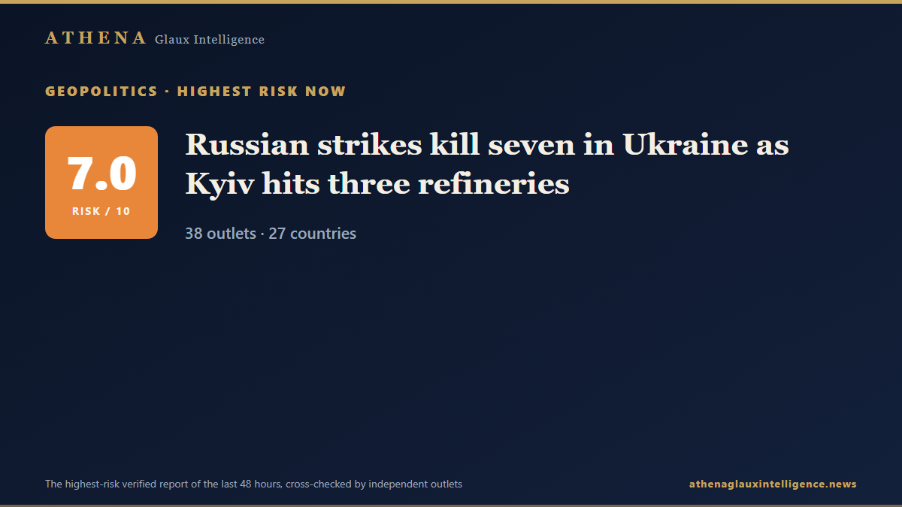
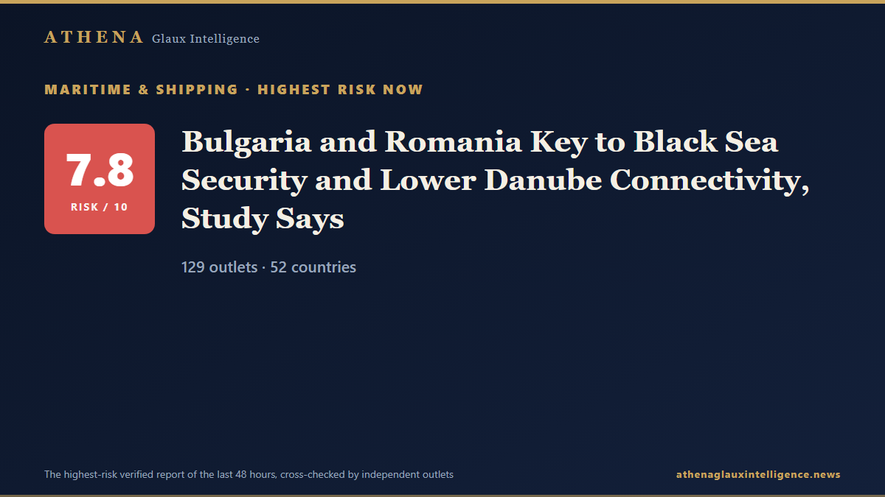
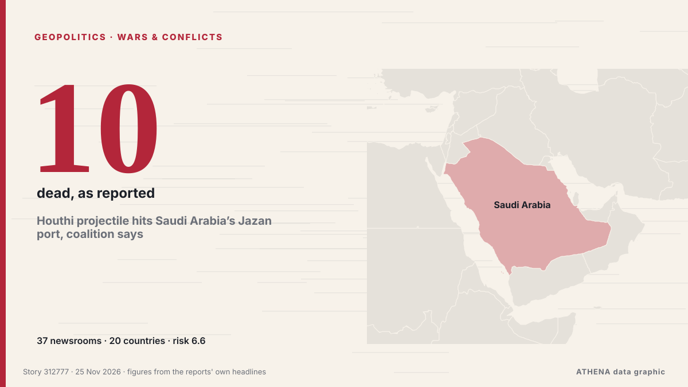

Risque 7.0Élevé
Géopolitique, économie et transport maritime — recoupés entre pays.
Géopolitique
Toute la géopolitique >Risque le plus élevé maintenant

Risque en hausseHausse au cours des dernières 24 heures
Maritime et transport
Bureau maritime >Risque le plus élevé maintenant
Risque 7.8Élevé
Bulgaria and Romania Key to Black Sea Security and Lower Danube Connectivity, Study Says
Voir les preuves ›
Liste de surveillanceDétroits, ports et autres reportages maritimes
- Strait of HormuzPerturbéattack / strike · risk 6.6 · 133 newsrooms (72 h)
- Bab el-Mandeb / Red SeaPerturbéattack / strike · risk 7.8 · 130 newsrooms (72 h)
- Kerch Strait / Black SeaPerturbéattack / strike · risk 7.8 · 130 newsrooms (72 h)
Chaque titre, vérifié dans plusieurs pays.
ATHENA Glaux suit 744 médias dans le monde. Une information devient un événement vérifié seulement lorsque des médias indépendants la rapportent. Chaque événement indique qui l'a publiée en premier et un score de risque avec ses raisons.
1 457événements en 24 h
744médias suivis
42minutes entre deux mises à jour
Séisme ou inondation près de chez vous cette semaine ?
Saisissez votre ville et voyez les séismes, inondations, tempêtes et alertes officielles à proximité, avec une liste du kit d'urgence 72 heures. Gratuit, sans inscription, et votre lieu reste sur votre appareil.
Des articles arrivent de médias indépendants : quand deux se rejoignent sur la même histoire, un événement vérifié naît.
Comment ATHENA vérifie une information
- CollecterLes reportages arrivent de médias indépendants dans de nombreux pays.
- CroiserQuand deux médias se rejoignent sur la même information, elle devient un événement vérifié.
- ExpliquerChaque événement montre qui était le premier, jusqu'où il s'est propagé et pourquoi le risque est ce qu'il est.
Perspectives mondiales des risques
Bilans hebdomadaires et mensuels : les événements les plus à risque, les tendances par domaine et par région, et ce qu'il faut surveiller.
Lire les perspectives ›Briefing quotidien
Les dix événements mondiaux les plus importants du jour, les risques en hausse et les nouveaux événements, chaque chiffre expliqué.
Ouvrir le briefing du jour ›
GéopolitiqueHouthi projectile hits Saudi Arabia’s Jazan port, coalition says
A projectile fired by Yemen’s Houthi militia struck Jazan port in southwestern Saudi Arabia on Wednesday, causing minor damage, the coalition said. de Arab News
6.3Importance
6.6Risque · élevé
89%Confiance
Les titres sont affichés en anglais, tels que publiés.
Technologie et cyber
Jensen Huang is back, but Nvidia still has to deal with his baggage
Massive data centers in Southeast Asia exploited a gap in U.S. sanctions, providing crucial computing power for Chinese companies and a cover for alleged chip smuggling. de to vima
Économie et marchés
Bangladesh garment workers protest smallest pay rise in 40 years
Bangladesh approved a 36% minimum wage hike for garment workers on Wednesday, its smallest in four decades, despite weeks of protests and calls for it to be doubled, prompting fresh clashes between… de Cyprus Mail
Sponsorisé
Cybernetics and Artificial Intelligence Lab Welcome to the Cybernetics and Artificial Intelligence Laboratory, established at the Department of Business Administration of the National and Kapodistrian University of Athens. The lab is headed by Professor Dimitrios Thomakos. The lab aims to do research that can be published in top venues. Our research uses tools and methods of Artificial Intelligence, and lies in the following areas: - Forecasting - Decision making - Cyber security - Finance We are always looking forward to collaborating with exceptional students!
En savoir plus – Cybernetics and Artificial Intelligence LabNavires dans les détroits du monde en ce moment
Comptages AIS en direct. Touchez ou survolez une barre pour le détail.
Derniers reportages
Egypt fuel tanker inferno kills 30, injures 15 on Cairo ring road
Gordon Ramsay named new host of BBC's Top Gear
FCC signs off on SpaceX’s plan to put up to 1 million data center satellites into space
Israeli opposition advances October 7 attack probe opposed by Netanyahu
Britain moving military aircraft to hangars at night over possible drone threats, media reports say
Silver price sinks to 14-month low on firm US Dollar ahead of PCE inflation data
Five Russian military jets hit in airfield strike, says Ukraine
Unclassified CIA system breached in cyberattack: Report
Technologie et cyber
China's Shenzhou-24 spaceship docks with Tiangong space station
China to launch Shenzhou-24 crewed spacecraft on November 25. de CGTN (China)
Géopolitique
Poland Urges NATO to Down Russian Missiles Over Ukraine
Poland has asked NATO allies to consider intercepting Russian missiles over Ukraine if they are heading toward alliance territory, Bloomberg reported. de Kyiv Post
Géopolitique
Bangladesh’s ousted leader Sheikh Hasina plans to return from exile on December 16
Sheikh Hasina, who was ousted as Bangladesh’s prime minister more than two years ago, said Tuesday that she plans to return home from exile in India on Dec. de DVB English
Géopolitique, politique et sécurité
Plus ›Guerres et conflits
Interactive: 720,000 Russian soldiers killed? Who are the men dying in Putin’s war
Western officials estimated in August that the Kremlin was losing 6,000 more troops per month than it could enlist. de The Independent
- Alliances et traités
Australia, Solomon Islands sign sweeping pact stymieing China
- Élections et politique
US Midterm Elections and South African Implications
- Élections et politique
Trump on ’60 Minutes’ Reflects on Midterm Loss, Death and Forgiveness: ‘I Do Hate Some of My Enemies’
- Diplomatie et sommets
One of Ireland's largest extras agencies is ending operations in the Republic over new rules
Économie, finance et marchés
Plus ›Prévisions et récession
Macy's Thanksgiving Parade postponed to Saturday due to expected high winds
It’s one of the oldest and last remaining monoculture moments in the U.S., and it tells a deeply American story about immigrants, retail, heritage and the power of pageantry. de Retail Dive
- Actions, obligations et marchés
SK Hynix to become Kioxia's top shareholder with bond conversion
- Inflation et taux d'intérêt
US inflation rises further in October
- Logement et immobilier
Israeli Developer Simon Aykut Freed on Health Grounds After Transfer from Cyprus
- Prévisions et récession
Will weather ground Macy’s Thanksgiving Parade balloons? Official floats start time change
Commerce, industrie et infrastructures
Plus ›Transport maritime et ports
Maersk Orders 12 Ultra-Large Dual-Fuel Container Ships
Maersk has ordered 12 ultra-large container ships scheduled for delivery in 2030 and 2031, which will become the biggest vessels in its fleet, a company spokesperson said on Tuesday.The vessels, each… de MarineLink
- Aérien, rail et route
CJP’s Saurav Das moves Delhi HC after being stopped from travelling to UK
- Agriculture et sécurité alimentaire
Wetang’ula reveals how MP was caught on CCTV stealing colleague’s phone in parliament
- Transport maritime et ports
IRGC Reports Three Tankers Exploded in Hormuz After Hitting Mines
- Droits de douane et contrôles
US Proposes 25% Tariff On India. It Could Come Down With Trade Deal
Énergie, ressources et environnement
Plus ›Météo extrême et catastrophes
California braces for flooding threat from huge tides, El Niño
Californians are preparing for a confluence of exceptionally high tides and El Niño-fueled weather that threatens coastal areas with extreme flooding during the busiest U.S. travel week of the year. de Phys.org
- Pollution et biodiversité
Everything you need to know about the U.S. Army’s 5-ton lead azide explosion in Iowa today
- Pollution et biodiversité
Army will blow up ammunition cache in Iowa today
- Météo extrême et catastrophes
29 miners believed trapped by flooding in an unauthorized gold mine in Indonesia
- Climat et politique climatique
COP31 chief blames EU for failure to reach climate deal
Technologie, IA et cybersécurité
Plus ›Intelligence artificielle
Amazon and Meta in talks to end the Muse blockade, Fortune reports
Amazon and Meta are in talks over a deal that would let Meta’s Muse AI agent shop on Amazon. de The Next Web
- Intelligence artificielle
AI consumes less water per dollar spent than almond milk or golf: Report
- Médias et désinformation
Ukrainian journalists outnumbered 30 to 1 by Russian propagandists during Oleshky evacuation, reporter says
- Logiciels et cloud
Microsoft Declares ‘Code Red’ After Historic 24-Hour Outage
- Intelligence artificielle
Etsy Rewrites AI Training Terms After Sellers Close Shops
Entreprises et investissement
Plus ›Investissements
Cost-of-living strike in Greece hits trains and planes
Greece's R&D spending reached €4.06 billion in 2025, up 12%, as the country expands investment in artificial intelligence and innovation. de Greek City Times
- Secteurs et risques
Small Businesses Are Not Thankful for Trump’s Thanksgiving Tariff Surprise
- Stratégie d'entreprise
Police declare Arise News owner Nduka Obaigbena, others wanted for threatening FirstBank CEO
- Stratégie d'entreprise
Eurostar services between London and Paris cancelled after staff go on surprise strike
- Secteurs et risques
Best Black Friday 2026 3D Printer deals live
Accidents et urgences
Plus ›Accidents et urgences
10 killed, 7 injured in deadly road collision in Egypt's Aswan
Dubai: Ten people were killed and seven others injured on Tuesday when a passenger vehicle collided with a transport vehicle on the Abu Simbel tourist road in Egypt's southern Aswan governorate… de Gulf News
- Accidents et urgences
Bristol City 1-1 Wrexham recap: Reaction after Cam Pring fires Robins to draw at Ashton Gate
- Accidents et urgences
At least 3 killed, 14 injured after under-construction building collapses near Karachi's Baloch Colony
- Accidents et urgences
Plane crash off the coast of Mississippi kills 6, including 2 children
- Accidents et urgences
Hanoi gas explosion kills 6, injures 10
Trois façons de lire aujourd'hui
Commencez par celle qui convient à votre tempsÉvénements vérifiés
Classés selon l'ampleur de la couverture
- What NVIDIA CEO Jensen Huang will face when he testifies before US Congress187 médias · 56 paysRisque 4.2
- Ukraine Says Drone Strike That Sank Russian Corvette Merkury In Libya Was Self-Defence121 médias · 48 paysRisque 6.1
- Two more oil tankers explode in Strait of Hormuz unsafe route87 médias · 33 paysRisque 4.7
- Alice Huang, woman at the heart of Nvidia scandal, kept in contact with China’s top spy agency for over a year77 médias · 30 paysRisque 4.0
- Saudi Arabia offers condolences to Turkiye after helicopter crash kills 558 médias · 28 paysRisque 4.5
Bureau d'évaluation
Posez une question et lisez une évaluation argumentée d'un sujet majeur, avec ce qui la démentirait.
Ouvrir le Bureau d'évaluation ›Aujourd'hui en chiffres
| 23:00 | 524 |
|---|---|
| 00:00 | 377 |
| 01:00 | 475 |
| 02:00 | 381 |
| 03:00 | 506 |
| 04:00 | 368 |
| 05:00 | 252 |
| 06:00 | 477 |
| 07:00 | 262 |
| 08:00 | 334 |
| 09:00 | 310 |
| 10:00 | 567 |
| 11:00 | 1205 |
| 12:00 | 1262 |
| 13:00 | 652 |
| 14:00 | 1047 |
| 15:00 | 561 |
| 16:00 | 835 |
| 17:00 | 496 |
| 18:00 | 579 |
| 19:00 | 506 |
| 20:00 | 265 |
| 21:00 | 351 |
| 22:00 | 267 |
Risque des événements du jour
Géopolitique91Économie et marchés46Commerce et industrie39Entreprises34Technologie et cyber27Énergie et environnement26Maritime8
Signaux émergents
- Hausse soudaine · ActifCartagena
- Nouveau nom dans l'actualité · ActifRas Tanura
- Hausse soudaine · ActifYork Post
- Hausse soudaine · ActifHuawei
- Hausse soudaine · ActifPCE
Alertes officielles
- M 6.5 - Vanuatu regionM6.5 · USGS ·
- M 5.9 - 238 km SW of Yanglong, ChinaM5.9 · PAGER yellow · USGS ·
Restez informé
ATHENA Weekly Risk Picture
Les plus grands risques géopolitiques, économiques et maritimes de la semaine, recoupés et notés.
Chaque vendredi à 8 h (heure d'Athènes) · gratuit · en anglais
S'abonner gratuitementATHENA sur Telegram
Les nouvelles dès leur publication : les événements urgents de risque 6 ou plus, un récapitulatif horaire, les mises à jour des suivis de risque et le briefing quotidien à 10 h.
Gratuit · publications en anglais · désinscription à tout moment
Rejoindre le canalL'inscription est gérée par beehiiv avec double confirmation : rien de ce que vous saisissez n'est envoyé à ATHENA, et chaque numéro contient un lien de désinscription.
Suivi des risques
Plus ›Détroit d'OrmuzRisque 5.112 nouveaux événements cette semaine · en baisse (18 la semaine précédente)Mer RougeRisque 6.716 nouveaux événements cette semaine · en baisse (47 la semaine précédente)Grèce et TurquieRisque 3.77 nouveaux événements cette semaine · stable par rapport à la semaine précédenteChypreRisque 3.814 nouveaux événements cette semaine · stable par rapport à la semaine précédenteSanctions contre la RussieRisque 6.816 nouveaux événements cette semaine · stable par rapport à la semaine précédenteGuerre en UkraineRisque 7.5219 nouveaux événements cette semaine · en baisse (269 la semaine précédente)Proche-Orient : Israël et GazaRisque 6.874 nouveaux événements cette semaine · en baisse (94 la semaine précédente)TaïwanRisque 2.710 nouveaux événements cette semaine · en baisse (13 la semaine précédente)Pétrole et gazRisque 4.230 nouveaux événements cette semaine · en baisse (36 la semaine précédente)Canal de SuezRisque 0.00 nouvel événement cette semaine · en baisse (3 la semaine précédente)Détroits turcsRisque 0.00 nouvel événement cette semaineCanal de PanamaRisque 0.00 nouvel événement cette semaineFlotte fantômeRisque 2.72 nouveaux événements cette semaine · en baisse (4 la semaine précédente)Navigation en mer NoireRisque 7.51 nouvel événement cette semaine · en baisse (5 la semaine précédente)Banques centrales et tauxRisque 4.141 nouveaux événements cette semaine · stable par rapport à la semaine précédenteÉconomie grecqueRisque 0.88 nouveaux événements cette semaine · en hausse (6 la semaine précédente)Énergie en Méditerranée orientaleRisque 0.02 nouveaux événements cette semaine · en baisse (4 la semaine précédente)BalkansRisque 4.911 nouveaux événements cette semaine · en baisse (28 la semaine précédente)Migration en MéditerranéeRisque 1.21 nouvel événement cette semaine · en baisse (3 la semaine précédente)
Risques mondiaux — semaine 48, 2026 (23–29 nov.) ›
Dans le monde
Amérique du NordWhat NVIDIA CEO Jensen Huang will face when he testifies before US Congress
59 événements
Moyen-Orient et Afrique du NordSaudi Arabia offers condolences to Turkiye after helicopter crash kills 5
59 événements
Asie du Sud-EstTrump says trade deal reached between the U.S. and the Philippines
55 événements
Asie du SudUS proposes new tariffs on 14 trading partners, including China and the EU
54 événements
Afrique subsaharienneHuawei convicted of money laundering, conspiracy to steal trade secrets, and fraud by US jury
44 événements
Russie et EurasieRussian strikes kill seven in Ukraine as Kyiv hits three refineries
44 événements
Asie de l'EstS. Korean won weakens slightly against U.S. dollar on foreign outflows
42 événements
OcéanieAustralia reaffirms Pacific climate commitment despite COP31 outcome
32 événements
Amérique latine et CaraïbesColombia rescues all hostages held at Cartagena supermarket
26 événements